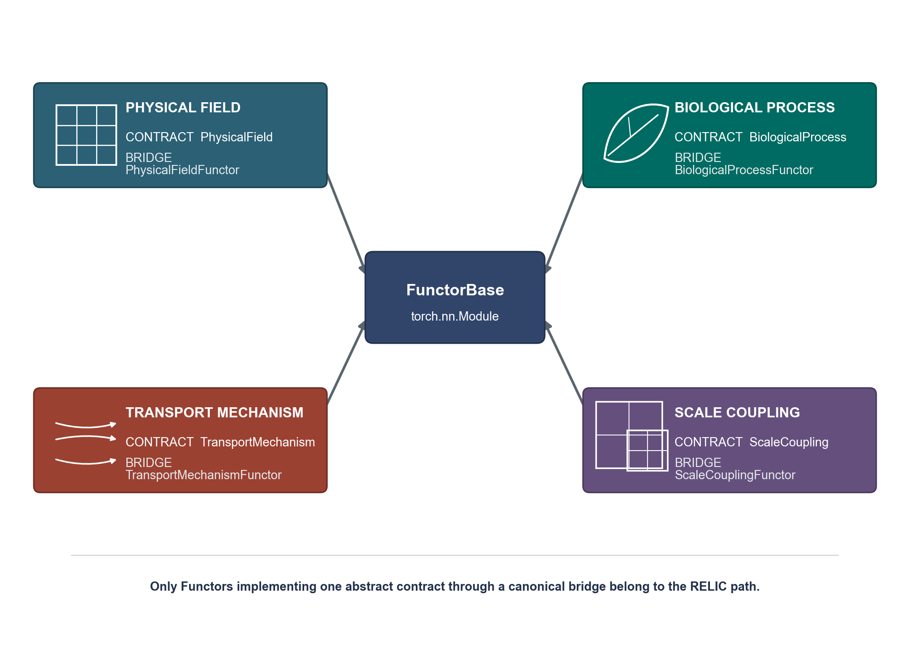
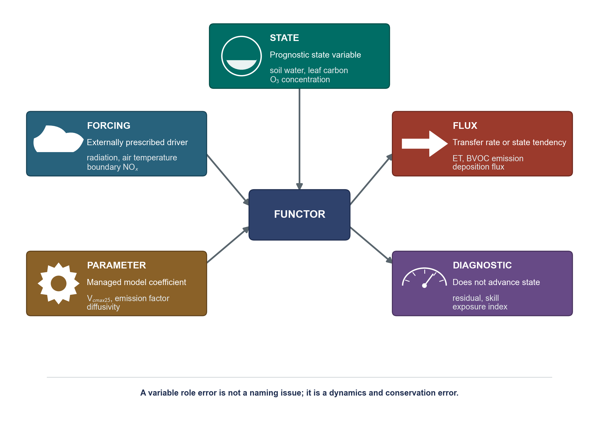

System Architecture
Scope and architectural contract
The Recomposable Ecosystem Library for Integrated Coupling (RELIC) is a composable framework for biogeochemical simulation built on PyTorch tensors. Gradients are available along the executed tensor path; bound clipping, events, rate-group and adaptive-step decisions, and external I/O are non-differentiable boundaries. It operates as a system of cooperating Functors under shared runtime owners, never as a single monolithic model. The package architecture follows four rules:
reuse the canonical owner before adding a capability;
compose processes through declared contracts without direct Functor-to-Functor calls;
route state, parameters, units, and device selection through their existing managers; and
distinguish structural evidence from executed scientific behavior.
The package version is the public architecture version. Subsystem schema versions, such as a GraphIR schema version, describe only that subsystem.
Architecture capability map

RELIC capability map. The executable core is the Functor, StateManager, parameter, orchestration, and validation path described in this guide; gradients are available along its tensor paths, not through clipping, event, or step-control decisions.
This diagram is a capability map, not a statement that every optional interface, streaming backend, coupling adapter, or deployment dependency is enabled in every installation. The canonical owners and runtime boundaries below determine what is active for a configured RELIC environment.
In particular, the diagram’s Strict IPHS label denotes the target capability
boundary. In the live inventory documented in this guide, 90 unique concrete
scientific Functor classes are registered across the four canonical bridge
families (BiologicalProcessFunctor: 37, TransportMechanismFunctor: 27,
PhysicalFieldFunctor: 14, ScaleCouplingFunctor: 12; 0 uncertified)
and are backed by 92 YAML certificates. Every concrete class has one primary
certificate, giving a 90-class distribution across Levels 0 through 5 of
4 / 15 / 39 / 32 / 0 / 0: four unavailable Level 0 boundaries and 86
executable classes across Levels 1 through 3 (IPHS-compatible, IPHS-wrapped,
or IPHS-structured). A Level 0 entry is a fail-closed boundary, not an
executable scientific process.
Two secondary certificates each cover one constructor selection, named in
their constructor_selection field, bringing the 92-certificate totals across
Levels 0 through 5 to 4 / 15 / 39 / 32 / 1 / 1:
FickianDiffusion(strict_runtime_point=True, spatial_dims=1) at Level 4
(strict dissipative port-Hamiltonian, {strict_runtime_point: true, spatial_dims: 1})
and ChemistryFunctor(physical_boundary="closed_constant_volume") at Level 5
(strict GENERIC, {physical_boundary: closed_constant_volume}).
IPHSEquivalenceCertificate accepts either one only together with the
runtime-point audit of a governed, committed step; without it the certificate
reports process_bound_runtime_unavailable. Only these two selections, within
their declared domain, may be described as strict. The primary certificates of
both classes remain at Level 3, and every other configuration of these classes
keeps that level.
The static overview diagram also reflects an earlier snapshot on two stochastic
status badges (stochastic_graphir_binding and restartable_substream). In
the live tree, GraphIR binds both certified Level 2 ([I]) stochastic
Functors (OrnsteinUhlenbeckTemperatureFunctor and
MarkedPoissonRainfallFunctor) with deterministic per-Functor substream
checkpoint and restart replay through FunctorSubstreamMixin. By contrast,
public optimization model-evaluation execution remains [N] (runtime_unbound),
and FourDVar in relic.optimization.assimilation remains an unimplemented
[N] framework shell without an adjoint model.
Package ownership and seven-layer map
The relic\ package comprises 16 top-level subpackages containing 594
subpackage .py files (595 Python files including relic\__init__.py) and
316,129 lines of Python. Static import analysis across those 16
subpackages records 73 directed cross-package edge pairs, 973
cross-package import statements, and 11 mutual package pairs governed by the
layered dependency rules.
Area |
Canonical responsibility |
|---|---|
|
Scientific abstractions, Functor lifecycle, simulator, state management, dependency graph, and device policy |
|
Concrete atmosphere, biosphere, hydrosphere, pedosphere, transport, and isotope processes |
|
|
|
Variable ownership, writer permissions, aliases, update semantics, and conservation-domain contracts |
|
GraphIR, typed ports, structural validation, compilation, execution plans, and graph execution |
|
Numerical solvers, DEC/IPHS operators, and compute backends |
|
Internal, external, scale, protocol, and C ABI coupling |
|
I/O, standards, quality control, streaming, and transformations |
|
Calibration, assimilation, sensitivity analysis, and uncertainty algorithm components ( |
|
Shared validation models, rules, conservation checks, and cross-domain checks |
|
CLI, API, Web, and Notebook-facing surfaces |
|
Python and manifest-based extension discovery and loading |
relic\models\, relic\monitoring\, relic\stochastic\, and relic\utils\
provide bounded support services. They do not replace the simulator or any
manager listed above.
Across these 16 subpackages, the mathematical and runtime architecture is
organized into seven layers plus an orthogonal control plane:
Layer |
Mathematical and runtime role |
Canonical owners |
Status |
|---|---|---|---|
|
Parameter space, variable contracts, units, dimensionality, support, and calendar rules |
|
|
|
Declared dependency graph, typed |
|
|
|
Provider identity digests, immutable |
|
|
|
Governed call |
|
|
|
Per-group-call |
|
|
|
Physical exchange ledgers, DEC cochains, |
|
|
|
Fingerprinted audit bundles, claim provenance, and verification scripts |
|
|
|
Provider lifecycle receipts, device fences, distributed coordination, and C ABI |
|
|
Four scientific abstractions
Every executable scientific process declares one primary scientific contract:
Abstract contract |
Meaning |
Bridge family |
|---|---|---|
|
A spatial or environmental field with physical semantics |
|
|
A biological or biogeochemical transformation |
|
|
Movement of matter, energy, or tracers |
|
|
Mapping or aggregation across declared scales |
|

The required lifecycle chain is:
Scientific abstraction
-> canonical Bridge Class
-> FunctorBase and torch.nn.Module
-> parameter-system-backed values
-> RELICSimulator registration
-> dependency-resolved execution group
-> StateManager.apply_updates(...)
-> diagnostics and provenance
Bridge Classes connect the scientific interface to the system lifecycle. They do not waive conservation, gradient, metadata, or unit obligations defined by the abstraction.
Functor lifecycle and metadata
FunctorBase owns parameter namespace resolution, metadata, device migration,
forward execution hooks, diagnostics, and local conservation integration.
Concrete Functors implement forward(state, time, dt, **kwargs) and return
declared updates. The simulator calls the Functor object; it does not bypass the
__call__() lifecycle.
FunctorMetadata identifies inputs, outputs, dependencies, execution stage,
spatial scale, variable kind, references, equations, units, and conserved
quantities. Empty input and output declarations reduce auditability. Competing
writers for the same non-diagnostic output are detected during registration and
may be rejected in strict dependency mode.
Variable roles and state ownership
The framework distinguishes five variable roles:
Role |
Runtime meaning |
|---|---|
|
Prognostic quantity committed through |
|
Rate or transfer used to produce a state update |
|
Externally supplied driver |
|
Configuration resolved through |
|
Read-only reported quantity |

ContractRegistry provides aliases, owners, permitted writers, increment
semantics, and conservation-domain membership when contracts are enabled.
StateManager.apply_updates(...) is the governed commit path. It resolves
aliases, authorizes writes, applies update semantics, maintains element
ledgers, records provenance, and rolls back failed transactional commits.
Parameters, constants, units, and time
Scientific Functors obtain runtime values only through
self.get_parameter_value(...). Non-Functor infrastructure uses
get_global_manager().get(...). Parameter values, units, dtype, bounds,
references, provenance, tags, and gradient settings belong in the parameter
YAML database. Under default runtime settings, UnifiedParameterManager loads
4,643 active parameters (810 with requires_grad=True), backed by 138
YAML files (134 in the base relic tier with 4,642 leaf entries and 4
in the calibrated tier with 109 leaf entries, totaling 4,751 YAML leaf
entries).
Physical constants are owned only by
relic\parameters\database\relic\physical\constants.yaml and are accessed
through get_physical_constant(...). Time conversion values are resolved
through UnifiedParameterManager; derived fallbacks may use already resolved
values.
Scientific modules must not define duplicate constants or unit registries.
from relic.core.device_policy import resolve_device
from relic.parameters import get_global_manager
from relic.utils.physical_constants import get_physical_constant
manager = get_global_manager()
kb = get_physical_constant("boltzmann_constant")
dev = resolve_device(explicit_device="cpu")
assert len(manager.list()) >= 4600
assert float(kb) > 0.0
assert dev.type == "cpu"
Simulator, execution rates, and device policy
RELICSimulator owns registration, dependency ordering, fast/medium/slow
execution groups, stepping, output storage, checkpoint integration, provenance,
and diagnostics.
Execution group |
Trigger |
Effective |
|---|---|---|
|
Every global step |
Current step size |
|
Configured interval or event |
Time since the previous medium execution |
|
Configured interval, calendar boundary, or event |
Time since the previous slow execution |
A Functor’s group is fixed at registration by one priority chain: the
execution_group argument, then the Functor’s own execution_group
attribute, then its characteristic time compared with two classification
thresholds from the parameter database
(computation.scheduling.fast_group_max_characteristic_days and
computation.scheduling.medium_group_max_characteristic_days; current
configuration example: 1 day and 10 days), then its temporal scale, then the
process_groups configuration entry, and finally fast when nothing is
declared. Every declared value is checked, also when a higher rule decides:
an invalid group name, a characteristic time that is not a finite
non-negative number of days, a temporal scale name that names no scale
(rejected already when the Functor’s metadata is built), or a
process_groups entry that disagrees with the attribute, characteristic time,
or temporal scale raises ValueError before anything is registered. To
override a process_groups entry, pass the group as the argument. The
thresholds classify processes;
they are not execution intervals. The medium interval is
medium_interval_seconds; the slow interval is slow_interval_seconds or,
when that key is unset, the month of the configured calendar. A medium or slow
group also runs when one of its Functors requests a bootstrap execution or
when a registered event trigger fires; a bootstrap request is used up
whenever the group runs. A group runs at most once per step: a step that
crosses several boundaries runs it once over the whole elapsed interval.
Every call receives the start of the interval it covers as its time
argument, plus any sub-step offset. The fast group starts at the step start;
in Strang mode the second half-steps start half a step later; a medium or
slow group starts at its last execution time. For example, a medium group
last run at 0 s is called in the step from 1 s to 2 s with time = 0 and
dt = 2. How a process samples time-dependent forcing inside that interval
is still a property of the process.
The adaptive option uses a scaled RMS metric over the state changes that the fast group committed. It is a control heuristic, not a Richardson or local-truncation-error estimate. A rejected first attempt is rolled back and retried at most once, over a shorter interval, and only when it is longer than the minimum step; an attempt at or below the minimum step is accepted with a warning. Only fast-group updates enter the metric. The retry result is accepted without a second check, so an accepted step can exceed the tolerance.
RELICSimulator(None) normalizes None to the empty configuration {}, under
which enable_auto_scale defaults to False. Device selection is centralized
in relic\core\device_policy.py. Pre-registration construction places every
FunctorBase instance on a CPU placeholder until simulator registration
migrates it to its resolved runtime device. resolve_device(...) evaluates
seven precedence tiers:
explicit_deviceargument (unless"auto"or"default");configuration per-functor or per-module overrides (
device_overridesandmodule_device_overridesat root,simulator, orruntime);runtime overrides from
set_device_overrides(...)and environment overrides fromRELIC_DEVICE_OVERRIDES_JSON;configuration global
device(at root,simulator, orruntime);process-wide default device from
set_default_device(...);RELIC_DEFAULT_DEVICEenvironment variable; anddistributed CUDA-first selection with automatic fallback to CPU when
distributed=True, or the caller’sdefault("cpu"by default).
Invalid override mappings raise TypeError and unparseable device entries
raise RuntimeError. Distributed and auto execution prefer CUDA and fall
back automatically to CPU when CUDA is unavailable (unless require_gpu=True
requires failure), whereas an explicit enable_distributed: true configuration
that cannot be satisfied raises RuntimeError. Scientific modules must not
perform scattered CUDA availability checks outside relic\core\device_policy.py.
Structural scientific layer
RELIC reuses DEC and IPHS structures through
relic\computation\operators\dec\ and
relic\computation\operators\iphs.py. Structural declarations can establish
typed cochain relationships, selected topological identities, operator
symmetry or skew-symmetry, and declared port relationships.
They do not by themselves prove an executable reaction law, a closed material ledger, an energy or entropy closure, or a strict GENERIC implementation. Reaction processes that claim structured execution must evaluate the declared stoichiometric operator and rate law in the runtime path. Closed ledgers need a runtime conservation matrix; open ledgers need an explicit route.
IPHSEquivalenceCertificate is the only owner of the IPHS standardization
level. Levels below strict IPHS must not be described as strict merely because
they expose compatible fields or diagnostics.
End-to-end assembly and execution
RELIC separates model declaration, structural compilation, numerical execution, and state commitment. The separation is functional: passing one stage does not imply that a later stage has passed.
GraphExecutor builds the planned Functors and registers them into one
RELICSimulator per prepared run. The simulator’s step(...) is the only
scientific state advance; GraphExecutor never commits state itself. Three
graphs are kept apart: the declared graph (GraphIR links and Functor
dependencies), the resolved execution order used by the simulator, and the
physical exchange graph of stocks and fluxes. An execution edge orders
computations; it does not establish a conserved transfer.
The graph path is
compile_graph(...) may proceed only under its selected strictness policy; a
blocking validation issue is not converted into an executable scientific
result. The runtime path for one Functor call can be written as
followed by one governed commit per group call \(g\) (the fast group, or each Strang sub-execution, then the medium and slow groups when due), all inside one step transaction
where \(\theta_i\) is resolved by UnifiedParameterManager, \(x\) is the
committed or provisional state that Functor \(i\) reads, \(s_g\) is the start
of the interval covered by group call \(g\), \(\mathcal{A}_g\) is the dependency-
and rate-selected active Functor set
of group call \(g\), \(G\) is the number of group calls in the step, and \(\Gamma\)
contains variable contracts, update modes, writer permissions, units, and
conservation-domain membership. The interval \(h_g\) is the step length for the
fast group (the half or full step of a Strang sub-execution) and
\(t_{\mathrm{future}}-t_{\mathrm{last}}\) for a medium or slow group. The
start \(s_g\) is the step start \(t_n\) for the fast group, for the first Strang
half-steps, and for the middle full step; \(t_n+h/2\) for the second Strang
half-steps; and \(t_{\mathrm{last}}\) for a medium or slow group. A Functor
with \(m\) sub-steps is called \(m\) times with \(h_g/m\) at the times
\(s_g+k\,h_g/m\), \(k=0,\ldots,m-1\). The step is accepted or rolled back as a
whole: a failure later in the step restores every group commit of that step.
The commit operator is not an unconditional sum: REPLACE, ACCUMULATE, flux
integration, aliases, projections, and rejection or rollback retain their
declared semantics.
Stage |
Canonical owner |
Consumes |
Produces |
Blocking condition |
|---|---|---|---|---|
Parameter and contract loading |
|
Parameter YAML and variable contracts |
Typed values, metadata, aliases, writer and ledger rules |
Missing required value, invalid unit/bounds, or inconsistent contract |
Graph declaration |
|
|
Declarative model graph |
Malformed or contradictory declarations |
Definition and port binding |
|
Class types and variable identities |
|
Unknown class, missing port, or unit/dimension mismatch |
Structural validation |
|
Graph, registry, SSOT catalog, and assertion payloads |
|
Blocking graph, dependency, port, unit, topology, or scientific assertion issue |
Compilation |
|
Validated graph and registered definitions |
Sealed |
Unresolved adapter, definition, topology, or compiler invariant |
Registration and scheduling |
|
Functor instances and execution plan |
Device-assigned fast/medium/slow execution order |
Duplicate writer, unresolved required dependency, or invalid device policy |
Functor execution |
|
Current or provisional state, time, |
State proposals ( |
Invalid input, execution failure, local conservation failure, or validation failure |
Transactional state commit |
|
Numeric updates, source map, increment metadata, contracts, and |
Committed state, provenance, and conservation ledger |
Unauthorized write, incompatible update, non-finite result, failed constraint, or rollback condition |
Persistence and publication output |
Existing checkpoint and data-writer owners |
Committed state and run identity |
Checkpoint receipt, data artifact, metadata, and hash |
Incompatible checkpoint, incomplete output contract, or write failure |
Within one group call, the simulator builds a provisional state so that a
later Functor of the same call, such as a declared downstream dependency, can
consume an upstream result. That provisional state is not an independent state
owner; the authoritative state changes only through the
StateManager.apply_updates(...) call at the end of that group call. A failure
later in the same step restores all group commits of that step. In strang
mode every sub-execution is its own group call, so a downstream Functor reads
the upstream result from the state committed by the upstream’s earlier
sub-execution, not from a shared provisional state. A Functor that declares
subprocess_outputs receives the upstream’s returned outputs from the
dependency-output map that all 2n - 1 sub-executions of the fast-group
composition share; these are the outputs of the upstream’s most recent earlier
sub-execution, its first half-step over [t, t + h/2]. The same composition
merges each Functor’s diagnostics over its sub-executions by the rule that
merges the returned outputs, and StateManager stores the merged values, so the
stored diagnostics of a step equal the returned ones.
Connection and conservation rules
An execution dependency is a declared ordering and data contract. If an edge \(i\rightarrow j\) is active, \(j\) may consume only the declared output of \(i\) with compatible identity, units, shape, support, and temporal semantics. The following rules apply:
A concrete Functor does not call another concrete Functor directly. Composition is expressed through metadata, GraphIR links, ports, adapters, and the simulator dependency graph.
Parameters flow from
UnifiedParameterManagerinto Functors; GraphIR andStateManagerdo not become secondary parameter stores.Diagnostics are reported outputs. They do not acquire prognostic ownership unless a separate variable contract explicitly authorizes that role.
Unit, support, temporal, and spatial changes require a declared executable adapter. A metadata relabel is not a conversion.
A Functor-level conservation check proves only its declared local ledger or constitutive relation. System conservation also requires compatible ports, common support and units, and the relevant storage change.
For a declared storage \(S\), a step ledger has the form
The residual is meaningful only after every term is mapped to the same
quantity, unit, spatial support, and time interval. A zero structural residual,
a successful process exit, or C N = 0 for one closed reaction ledger does not
by itself prove whole-system mass, energy, entropy, or strict GENERIC closure.
The detailed equations and applicability conditions are maintained in the
theory guide; class-specific ports and runtime equations are
maintained in the scientific class reference.